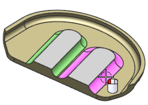
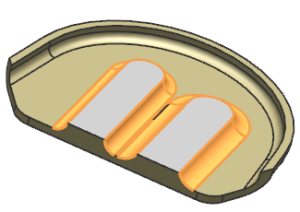
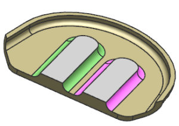

在同步建模工具条上的细节特征下拉菜单中，选择调整圆角大小 。
尝试选择这些带颜色的圆角面。
|
注释 |
无法选择这些面，因为 NX 并没有将它们识别为圆角。 |

在同步建模工具条上的细节特征下拉菜单中，选择标记为凹口圆角 。
选择如图所示的六个带颜色的圆角面。

|
提示 |
如果您在对话框中看见了激活的<确定>按钮，那么您可以选择其它命令而不用单击鼠标中键来完成当前命令。 |
在同步建模工具条上的细节特征下拉菜单中，选择调整圆角大小 。
选择如图所示的六个带颜色的圆角面。
在半径屏显输入框中键入0.2并单击鼠标中键。
现在所有的圆角半径都是一样的。
